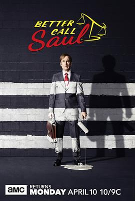

风骚律师 第三季 / Better Call Saul Season 3
又名：绝命律师 / 索尔最高 / 索尔热线
作品信息
| 导演 | 文斯·吉利根 / 约翰·施班 / 托马斯·施纳泽 / 丹尼尔·沙克海姆 / 基斯·戈登 / 亚当·伯恩斯坦 / 明基·斯皮罗 / 皮特·古尔德 |
| 编剧 | 文斯·吉利根 / 皮特·古尔德 / 珍妮弗·哈奇森 / 安·彻基斯 / 马里恩·德尔 / 托马斯·施纳泽 / 戈登·史密斯 / 乔纳森·格拉泽 |
| 主演 | 鲍勃·奥登科克 / 乔纳森·班克斯 / 蕾亚·塞洪 / 帕特里克·法比安 / 迈克尔·麦基恩 / 布兰登·巴恩斯 / 吉安卡罗·埃斯波西托 |
| 类型 | 剧情 / 犯罪 |
| 制片国家/地区 | 美国 |
| 语言 | 英语 |
| 首播 | 2017-04-10(美国) |
| 季数 | 3 |
| 集数 | 10 |
| 单集片长 | 45分钟 |
| IMDb | tt5554490 |
最后一次看到是 2026-08-12T21:11:14+08:00 · 豆瓣原页